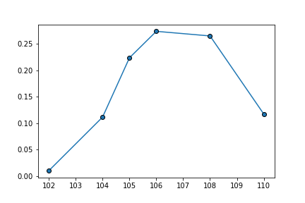
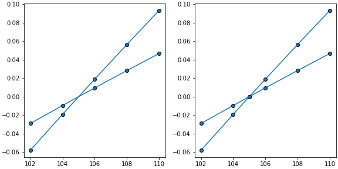
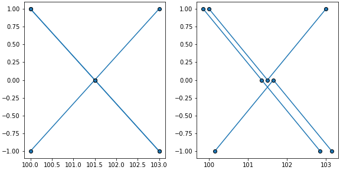

plot_spider¶
-
isopy.tb.plot_spider(axes, y, yerr=None, x=None, constants=None, xscatter=None, color=None, marker=True, line=True, **kwargs)[source]¶ Plot data as a spider diagram on matplotlib axes .
- Parameters
axes (axes, plt) – The axes on which the data points will we plotted. Must be a matplotlib axes object or any object with a gca() method that return a matplotlib axes object, such as a matplotlib pyplot instance.
y (numpy_array_like, dict, isopy_array) – Any object that can be converted to an isopy array or an numpy array. Multidimensional array will be flattened. Will be sorted by increasing x values before plotted.
yerr (numpy_array_like, dict, isopy_array) – Uncertianties associated with y values. Can be any object that can be converted to a numpy array. Multidimensional array will be flattened. Must either be an array with the same size as y or a single value which will be used for all values of y. If
Noneno errorbars are shown.x (numpy_array_like, isopy_key_list, Optional) – Any object or sequence of object that can be converted to float values. If x is an isotope key list the nass number of each key is used, for ratio key lists the numerator key string is used. An exception is thrown if there is no common denominator. If
Noneand y is an isopy array then x will be inferred from the key strings.constants (dict[scalar, scalar], Optional) – A dictionary mapping constant y values to their x value. Both the key and the value must be scalars.
xscatter (scalar, Optional) – If given, xscatter is used to create variation in the x axis values used for each successive set of y values, within the range (X - xscatter, x*+*xscatter). This helps differentiate samples that all pass through the same point.
color (str, Optional) – Color of the marker face and line between points, if marker and line are not
False. Accepted strings are named colour in matplotlib or a string of a hex triplet begining with “#”. See here for a list of named colours in matplotlib. If not given the next colour on the internal matplotlib colour cycle is used.marker (bool, str, Default = True) –
If
Truea marker is shown for each data point. If`Falseno marker is shown. Can also be a string describing any marker accepted by matplotlib. See here for a list of avaliable markers.line (bool, str, Default = True) –
If
Truea line is drawn between each datapoint. IfFalseno line is shown. Can also be a string describing a linestyle defined by matplotlib. See here for a list of avaliable linestyles.Truedefaults to"solid".kwargs –
Any keyword argument accepted by matplotlib axes method errorbar. See here for a list of keyword arguments.
Examples
>>> array = isopy.tb.make_ms_array('pd') >>> isopy.tb.plot_spider(plt, array) #Will plot the fraction of each Pd isotope >>> plt.show()
>>> subplots = isopy.tb.create_subplots(plt, [['left', 'right']], figwidth=8) >>> array = isopy.tb.make_ms_array('pd', mf_factor = [0.001, 0.002]).ratio('105pd') >>> array = isopy.toolbox.isotope.normalise_data(array, isopy.refval.isotope.abundance, 1000) >>> isopy.tb.plot_spider(subplots['left'], array) #The numerator mass numbers are used as x >>> isopy.tb.plot_spider(subplots['right'], array, constants={105: 0}) #Adds a zero for the denominator mass number >>> plt.show()
>>> subplots = isopy.tb.create_subplots(plt, [['left', 'right']], figwidth=8) >>> values = {100: [1, 1, -1], 101.5: [0, 0, 0], 103: [-1, 1, -1]} #keys can be floats >>> isopy.array(values) >>> isopy.tb.plot_spider(subplots['left'], values) #Impossible to tell the rows apart >>> isopy.tb.plot_spider(subplots['right'], values, xscatter=0.15) #Much clearer >>> plt.show()
